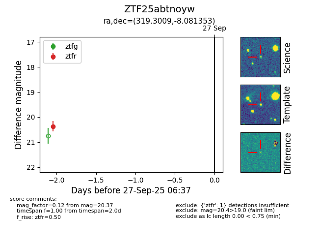

FINK: ZTF25abtnoyw
Lasair: ZTF25abtnoyw
ALeRCE: ZTF25abtnoyw
ZTF25abtnoyw (ztf,fink)
equatorial (ra, dec) = (319.3009,-8.08135)
galactic (l, b) = (43.1140,-35.98021)

last ztfr=20.37
1 ztfr detections